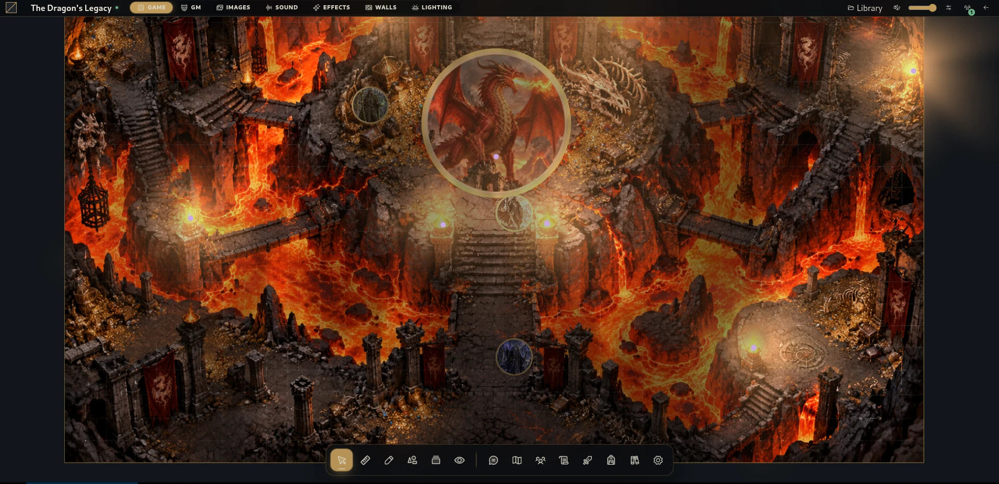
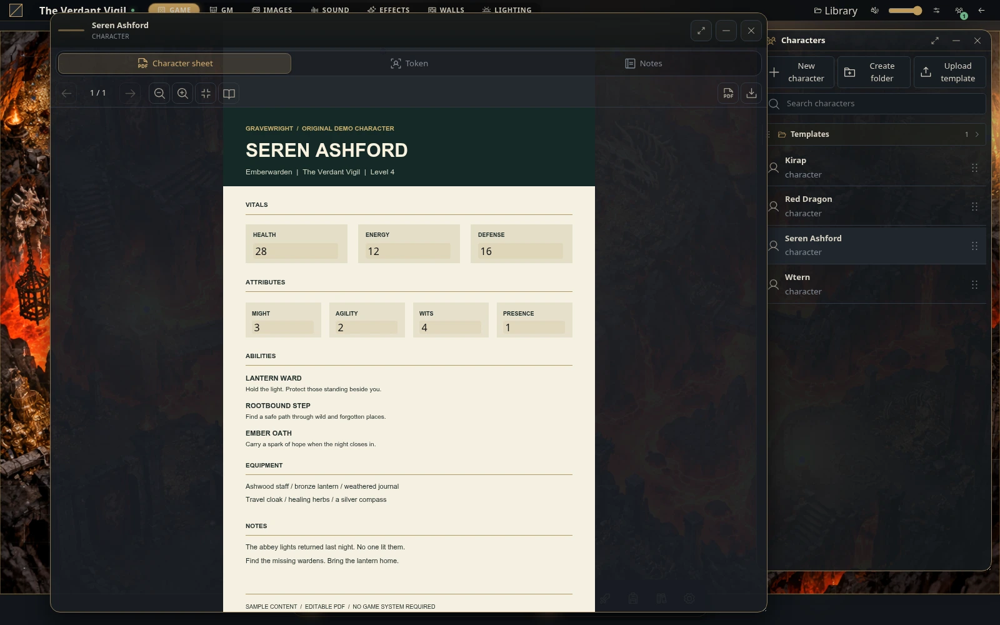
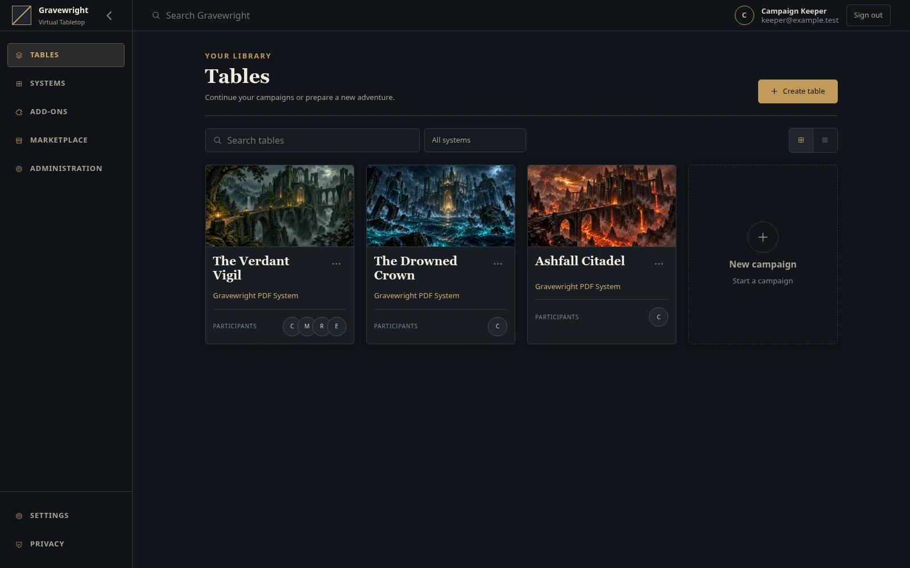

Mapas que contam histórias
Prepare cenas com paredes, iluminação e névoa. Escolha o que os jogadores veem e quando revelar.
Mesa virtual open source · Alpha 0.1.0
Seus mundos merecem mais que uma grade e uma ficha de personagem.
ZIP completo do código com o Runner para Windows · Windows x64

Por que Gravewright?
Da primeira sala à última rolagem da noite, mantenha os lugares, personagens e descobertas da campanha juntos.
Prepare cenas com paredes, iluminação e névoa. Escolha o que os jogadores veem e quando revelar.
Conecte atores e tokens às fichas PDF que sua mesa já conhece.
Deixe diários, missões, materiais e compêndios perto da ação.
Role dados, compartilhe áudio, compre cartas e acompanhe o combate sem sair da mesa.
Gravewright em ação · 51 segundos
Assista a The Dragon’s Legacy: um campo de batalha cercado por lava, controles de iluminação e névoa e personagens se movendo pela cena. Uma captura real do Gravewright com trilha orquestral de batalha.
Organize a campanha, ajuste as permissões e transmita a cena quando o grupo estiver pronto.
Entre em uma campanha hospedada pela rede, abra seu personagem e ocupe seu lugar à mesa.
Mantenha personagens, diários e descobertas compartilhadas juntos de uma sessão para a outra.
Seus personagens
O Gravewright PDF System nativo conecta personagens, fichas PDF e mapeamento de campos aos tokens no mapa. Deixe seu personagem perto da história.

A release atual
O primeiro lançamento da implementação Django reúne a mesa, ferramentas de campanha, interfaces de extensão e um Runner nativo para Windows.
Notas da release ↗
Verifica uv, Python e Node.js/npm, prepara dependências e compila o frontend antes de abrir o navegador.
O Runner guarda dados pessoais fora do código e reutiliza ferramentas e builds do frontend que não mudaram.
Interfaces Python, HTTP, WebSocket e de navegador documentadas ajudam a entender e expandir o projeto.
Primeiros passos, arquitetura, APIs, módulos e implantação em inglês e português brasileiro.
Baixe o Gravewright
No Windows, comece pelo ZIP completo do projeto. O Runner cuida das ferramentas e dependências necessárias.
Windows 10 (1803+) ou Windows 11 · x64 · Navegador com WebGL
Extraia todo o ZIP para uma pasta com permissão de escrita. Mantenha os arquivos do projeto juntos.
Dê dois cliques em Gravewright Runner.bat. Ferramentas e pacotes ausentes precisam de internet.
Aguarde o navegador abrir e crie o primeiro proprietário. Mantenha o console aberto durante o jogo.
Para desenvolvedores
Use Python 3.14 ou superior e uv. Estes comandos usam um shell POSIX e preservam um arquivo .env existente.
git clone https://github.com/Gravewright/gravewright.git
cd gravewright
uv sync --locked
cp -n .env.example .env
uv run --locked python manage.py migrate
uv run --locked python main.pyDeixe com a sua cara
Crie integrações, explore módulos de navegador ou contribua com a própria mesa. Siga as interfaces, contratos e o ciclo de vida de módulos documentados.
A permissão para módulos independentes sob a seção 7 permite qualquer licença, inclusive proprietária, utilizando ou não as APIs fornecidas. Cópias e modificações da implementação do núcleo continuam sujeitas à licença dele.
Leia a política de licenciamento ↗Algumas coisas úteis
Em %LOCALAPPDATA%\Gravewright\data, incluindo configurações, banco, mídia e logs. Encerre o servidor e copie toda a pasta de dados antes de substituir o código ou aplicar atualizações.
A interface da aplicação suporta inglês atualmente. O site e a documentação do projeto estão disponíveis em inglês e português brasileiro.
As atualizações são manuais. Baixe o novo código após fazer backup dos dados. A descoberta de releases não instala uma atualização automaticamente.
O projeto está em estágio alpha. Mantenha backups das campanhas importantes e consulte as limitações no guia de uso. O sistema PDF nativo não inclui um editor ou catálogo completo de itens.
Módulos de navegador executam na página principal. Instale código confiável; assinaturas de pacotes não fornecem isolamento.
Ajude a construir o Gravewright
Relate um bug reproduzível, compartilhe sua experiência em uma sessão, melhore a acessibilidade ou ajude no código e na documentação. Pequenas contribuições bem pensadas fazem diferença.
Sua próxima história começa aqui